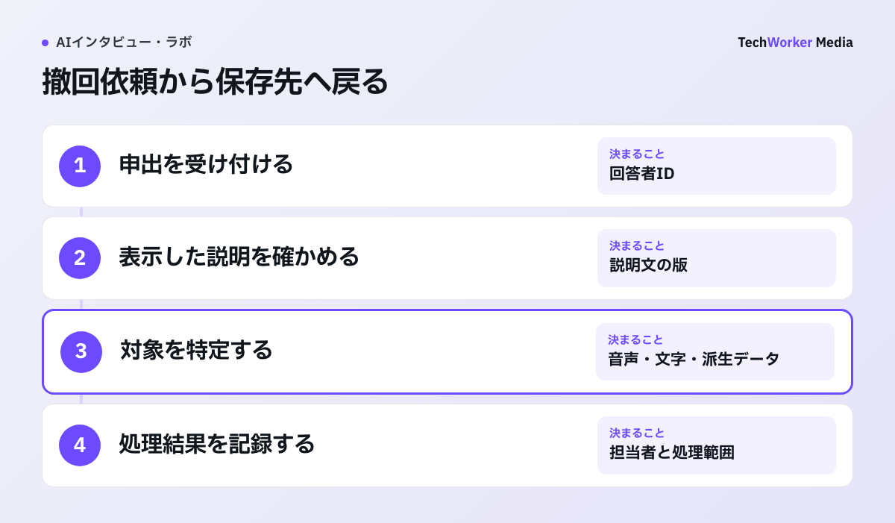
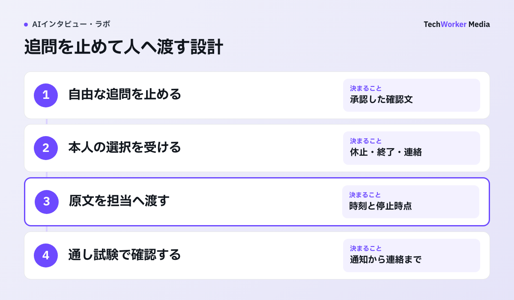

AIインタビューを始める前に、回答者が「何に同意したのか」を分かるように伝える必要があります。英国ICOの指針は、説明を短く、分かりやすく、他の情報と分けて示すよう求めています。日本の調査へ英国法を直接適用せず、画面設計の参考として読みます。
一次情報：英国ICO「How should we obtain, record and manage consent?」（確認日：2026年10月6日）
“Consent requests need to be prominent, concise, easy to understand and separate from any other information.”読むべき点は、同意を一般規約の中へ埋め込まず、本人が判断できる単位へ分けることです。日本の案件へ英国法を直接当てはめるのではなく、調査参加、録音、データ処理、撤回を別々に説明する画面設計の原則として使います。
出典：Information Commissioner’s Office。原文を25語以内で引用。ICOサイト本文はOpen Government Licence v3.0で提供され、本文の日本語はTechWorkerによる解説です。ライセンス条件。
利用規約だけでは足りない理由
足りません。調査参加、録音、個人データの処理根拠を区別し、撤回まで続く運用として設計します。
AIインタビューでは、質問の質と同じくらい、回答者の理解が必要です。何に参加し、何が記録され、誰が結果を見るのかを、分かる状態にします。
同意画面に長い利用規約を置くだけでは、調査参加への同意、録音への同意、個人データの処理根拠を区別できません。
実務の出発点は、同意を一度のチェック操作にせず、説明・記録・撤回まで続く運用として設計することです。
法的根拠は、調査主体や目的で変わります。本記事は個別案件の法務判断でなく、回答体験と証跡を整えるための設計項目を示します。
CoeSignalで確認する同意の接点
回答者への説明、終了導線、発話根拠へ戻れる分析を含めて、調査フローを確認できます。
CoeSignal（株式会社TechWorkerが提供するAIインタビュープラットフォーム）では、深掘りに加えて、回答者への説明、終了導線、発話根拠へ戻れる分析まで確認できます。
顧客理解やVoC（顧客の声）調査の設計段階から相談したい場合は、取得データと利用目的の整理から支援します。
関連する基礎はAIインタビューとは、社内調査固有の論点は従業員の本音をAIインタビューで聞くも参照してください。
参加前に分けて伝える6項目
主体と目的、AIの範囲、取得データ、保存期間、任意性、撤回の六つを分けて説明します。

撤回の運用例では、申し出を受けた担当者が回答者IDから説明文の版を開きます。その版で約束した範囲と、音声・文字起こし・派生データの保存先を照合します。削除できない範囲があれば、理由と対象を分けて回答します。画面に書いた約束だけで完了にせず、実際の処理結果まで記録します。
- 調査の主体と目的。誰が調査を行い、何を判断するために回答を集めるのかを示します。「商品改善のため」だけにせず、企画案の比較、解約理由の把握、従業員体験の改善など、用途が想像できる粒度にします。
- AIが担う範囲。質問、深掘り、文字起こし、要約、分析のうち、AIが担う部分を説明します。人間の担当者が全発話を見るのか、集計結果だけを見るのかも分けます。「AIが判断します」という曖昧な表現は避けます。
- 取得するデータ。音声、文字起こし、回答時間、端末情報、属性情報など、実際に取得するものだけを列挙します。録音しないのに録音を含むテンプレートを流用したり、取得しているログを説明から落としたりしないことが大切です。
- 利用者と保存期間。調査担当、委託先、分析担当など、アクセスする役割を示します。保存期間は「必要な間」とせず、元音声、文字起こし、匿名化後データを分けて期限を決めます。削除時にバックアップや派生データをどう扱うかも、運用へ落とします。
- 任意性と途中終了。回答しない選択、途中で終了する方法、不利益の有無を明記します。回答者が終了を選んだら、AIが会話を続けようとしても質問を止めます。
- 問い合わせと撤回。問い合わせ先に加えて、撤回できる範囲と期限を示します。匿名化後は個人へ戻せず削除できない場合、その境界を参加前に説明します。
センシティブな開示は、同意画面の外でどう扱いますか？
自傷、暴力、健康被害などの話題を扱う調査では、同意取得だけで安全は確保できません。実査前に、続行、一時停止、終了、有人への引継ぎの条件を決め、担当者が応答できる時間帯だけ実施します。
引継ぎ記録では、参加者の発言、日時、設問、停止時点、本人が選んだ対応を原文のまま残します。AIの要約や危険度ラベルは別欄に置きます。特定の単語だけで自動終了すると、比喩と現在の危険を混同するため、人の確認へ渡します。

同意証跡に残す5つの記録
回答者ID、同意日時、説明文の版、選択項目、撤回日時を分けて保存し、AI利用の扱いも確認します。
ICOの同意記録ガイダンスは、誰が、いつ、何を説明され、どの方法で同意し、撤回したかを追える記録を求めています。日本の案件へそのまま適用する規則ではありませんが、証跡設計の実務参考になります。
最低限、次の5つを分けて保存します。
- 回答者ID
- 同意日時
- 説明文の版
- 選択した項目
- 撤回日時
同意文を後から更新しても、過去の回答者に表示した版が分かるようにします。音声で同意を取る場合も、使用した台本の版と日時を残します。
個人情報保護委員会は、生成AIサービスへ個人データを入力する際の注意を示しています。提供者がAIの精度向上などの学習データとして利用する場合、個人データの入力が提供に当たり、第三者提供は原則として本人の事前同意が必要です。
利用するAIサービスの学習利用、保存、再委託、データを保存する国・地域（リージョン）を確認します。調査参加の同意だけで、処理全体を済ませません。
公開前に画面と運用を照合する
公開前に確認表で画面と処理の一致を点検し、同意率だけでなく撤回や理解確認も見ます。
公開前には、説明文だけでなく実装を確認します。
- 同意前に録音や送信が始まっていないか
- 必須と任意の選択が分かれているか
- 途中終了後に追加質問が送られないか
- 同意文の版と日時が監査ログへ残るか
- 撤回依頼から対象データを特定できるか
- 削除後も分析結果へ個人が残らないか
見るべきは、開始率に加えて、途中終了、問い合わせ、撤回、説明の理解確認です。
同意設計を崩す4つの運用
同意率だけの最適化、テンプレートの流用、調査同意だけでの処理、AIの担当範囲を曖昧にする説明が、典型的な失敗です。
- 同意率だけを最適化する。説明を短くしすぎる誘惑が生まれます。離脱が多い項目は隠さず、データ取得自体を減らせないか見直します。
- テンプレートを流用する。録音しないのに録音を含む文面を流用したり、取得しているログを説明から落としたりします。
- 調査参加の同意だけで、処理全体を済ませる。AIサービスの学習利用、保存、再委託、保存する国・地域の確認が抜けます。
- 「AIが判断します」と書く。AIが担う範囲と、人間が見る範囲が分かりません。
海外の一次情報を日本案件で使う範囲
証跡や撤回の考え方の参考になりますが、日本法を直接置き換える規則ではありません。
英国ICOと欧州データ保護会議は、同意の証跡と撤回可能性を重視しています。本人に真の選択肢がない場面では、同意が適切な処理根拠にならない場合も示しています。
NISTのPrivacy Frameworkは、同意画面だけでなく、データ処理全体のリスクを管理する視点を提供します。日本では、個人情報保護委員会の注意喚起と、案件ごとの処理目的・委託関係を先に確認します。
| 情報源 | 示している内容 | 適用上の注意 |
|---|---|---|
| 個人情報保護委員会 | 生成AIサービスの提供者が入力情報を精度向上などの学習データに利用する場合、個人データの入力が提供に当たり、第三者提供は原則として本人の事前同意が必要 | 日本の案件では最初に確認する |
| 英国ICO | 誰が、いつ、何を説明され、どの方法で同意し、撤回したかを追える記録 | 日本の案件へそのまま適用する規則ではない |
| ICOと欧州データ保護会議 | 同意の証跡と撤回可能性。真の選択肢がない場面では同意が適切な処理根拠にならない場合がある | 日本法を直接置き換えない |
| NIST Privacy Framework | 同意画面だけでなく、データ処理全体のリスクを管理する視点 | 案件ごとの処理目的・委託関係と併せて使う |
表：本記事で引用した一次情報の整理。海外の制度・職業規範は、相違点と限界を踏まえて使います。
実務では、参加者が録音には同意するが社外共有は希望しない場合を試験します。説明文の版、選択した範囲、回答データの識別子を結び、撤回依頼を受けた担当者が保存先まで追えるかを確認します。
これは一律の法定様式でなく、説明と実際の処理を一致させるための運用例です。
よくある質問
足りません。調査参加への同意、録音への同意、個人データの処理根拠は区別が必要です。同意を一度のチェックで終えず、説明、記録、撤回まで続く運用として設計し、画面と処理の一致も確認します。
回答者ID、同意日時、説明文の版、選択した項目、撤回日時を分けて保存します。同意文を後から更新しても、過去の回答者に見せた版が分かるようにします。音声で同意を取る場合も、台本の版と日時を残します。
次の5点を確認します。同意前に録音や送信が始まっていないか、必須と任意が分かれているかを見ます。途中終了後に質問が来ないか、版と日時がログに残るかを見ます。撤回依頼から対象データを特定できるかも確認します。
実査前に残す同意設計メモ
公開前の判断記録には、説明文だけでなく、画面と処理を同じ表へ載せます。
- 取得する音声、文字、識別情報、AIが作る派生データを分ける。
- 調査参加、録音、任意項目、二次利用の選択を分ける。
- 表示した説明文の版、同意日時、撤回日時、処理担当者を残す。
- センシティブな開示が出た場合の停止条件、引継ぎ先、応答可能時間を記す。
撤回テストで対象データを特定できない場合、同意率が高くても実査を始めません。
出典と確認範囲（一次情報）
確認日：2026年10月6日。製品仕様・制度は更新されるため、導入時はリンク先の最新版を再確認してください。海外の制度・職業規範は日本へ直接適用せず、相違点と限界を本文に明記しています。